CRAFT HOUSE PICTURES is a New York-based production company for bold, unexpected stories from underrepresented voices. Founded by Jaelyn Ellis, a 2026 Sundance Producer’s Lab fellow who’s work has received support from The Future of Film is Female, and Wavelength’s WAVE grant.
We do not currently accept unsolicited submissions.
For inquiries, drop a line at jay@crafthousepictures.com.